Автоматизация: роботы, триггеры и бизнес-процессы в Битрикс24
Этот модуль учит безопасно и осмысленно внедрять автоматизацию в Битрикс24: не автоматизировать хаос, выбирать правильный инструмент, тестировать сценарий до запуска и понимать, кто владеет процессом после включения автоматизации.
Что важно понять в M9
Автоматизация не заменяет процесс. Она помогает выполнять повторяющиеся действия только тогда, когда заранее понятны роли, стадии, условия и результат.
Результат прохождения
сотрудник умеет выбрать инструмент, описать процесс, настроить базовый сценарий и протестировать его
Что стоит запомнить
Хорошая автоматизация = описанный процесс + понятные роли + правильный инструмент + тестирование + владелец процесса.
Нельзя автоматизировать хаос. Если процесс не описан, роли не определены, стадии не понятны, робот только ускорит ошибки.
Паспорт модуля
Место в курсе
после M4–M8
Входной уровень
пользователь понимает задачи, проекты, документы, отчетность и CRM
Целевая аудитория
ПТО, РП, инженеры, мастера, снабжение, документооборот, CRM-ответственные, администраторы Битрикс24
Итоговый результат
сотрудник умеет выбрать инструмент, описать процесс, настроить базовый сценарий и протестировать его
сотрудник умеет выбрать инструмент, описать процесс, настроить базовый сценарий и протестировать его
1. Автоматизация как продолжение процесса
В M9 сначала нужно описать процесс, а уже потом настраивать робота, триггер или бизнес-процесс. Автоматизация не исправляет плохую постановку задач, не заменяет ответственного и не создает смысл там, где нет понятного результата.
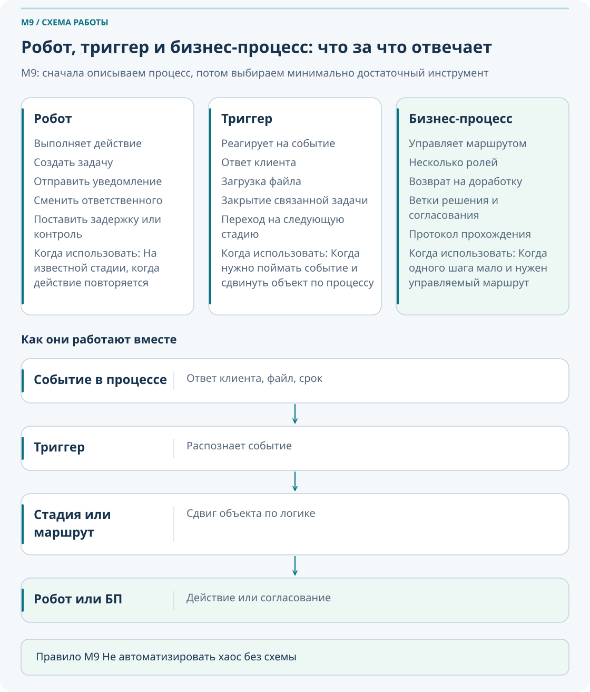
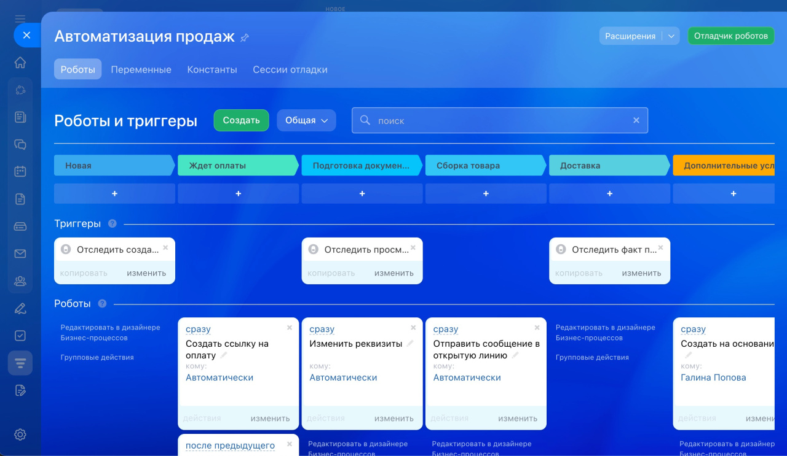
Что должно произойти?
Нужно четко описать ожидаемое действие или результат.
Когда это должно произойти?
Нужны стадия, событие, срок или условие запуска.
Кто отвечает?
Должен быть известен получатель задачи, уведомления или согласования.
Как проверить результат?
Нужно заранее определить критерий успешного срабатывания.
- Что должно произойти?
- Когда это должно произойти?
- Кто должен получить задачу или уведомление?
- Какой результат должен быть зафиксирован?
- Как проверить, что автоматизация сработала правильно?
| Без описания процесса | После описания процесса |
|---|---|
| Непонятно, кого уведомлять и когда создавать задачу | Есть роли, стадии, условия и ожидаемый результат |
| Робот работает, но создает шум и дубли | Автоматизация закрывает конкретную повторяющуюся рутину |
| Никто не отвечает за сопровождение сценария | Назначен владелец процесса и обновляется инструкция в базе знаний |
У каждой автоматизации должен быть владелец: человек, который понимает, зачем она нужна, проверяет ее актуальность, принимает решения об изменениях и обновляет описание в базе знаний.
2. Роботы
Сначала выберите инструмент. Роботы задач и CRM настраиваются в своих разделах и имеют разный набор действий. Перед упражнением проверьте тариф, права на настройку и наличие нужного робота. Если настройка недоступна, подготовьте схему и тестовые примеры без запуска. Роботы и триггеры задач.
Робот выполняет действие: создает задачу, отправляет уведомление, меняет ответственного, запускает задержку или оформляет другой повторяющийся шаг. Роботы полезны там, где известно, что нужно сделать на конкретной стадии или при наступлении условия.
Когда нужен робот
Есть понятная стадия, понятный получатель и конкретное действие, которое повторяется много раз.
Когда робот не нужен
Если процесс еще не описан или решение требует сложного маршрута согласования с возвратами.
Что важно настроить
Стадию, условие, задержку, получателя, текст уведомления и проверку результата.
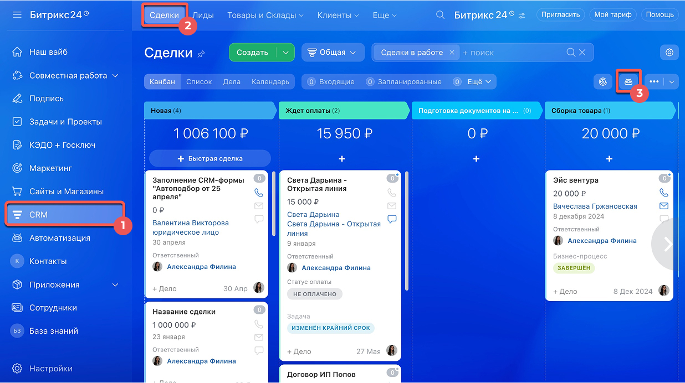
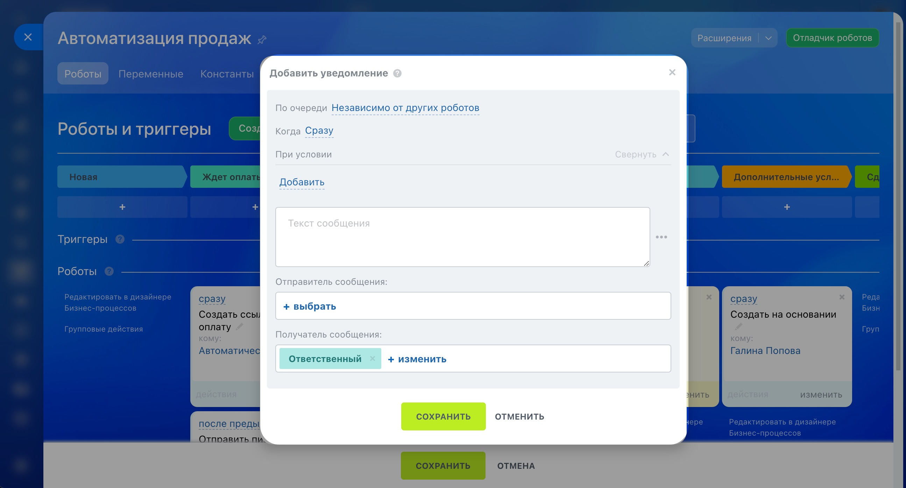
Стадия
Условие
Задержка
Получатель
Результат
Не создавайте несколько роботов с похожими условиями на одной стадии. Проверяйте, не уйдет ли уведомление лишним людям и не создастся ли повторная задача при повторном входе элемента в стадию.
Настройте базовое напоминание ответственному о контрольной точке по объекту.
Опишите условия создания задачи ПТО при входе элемента в рабочую стадию.
Спроектируйте логику, при которой после подтверждения этапа меняется ответственный или участники контроля.
3. Триггеры
Триггер реагирует на событие и переводит элемент на нужную стадию. Сам по себе он не решает задачу бизнеса, а лишь переводит элемент туда, где уже могут сработать роботы и другие правила.
Робот выполняет действие. Триггер реагирует на событие и переводит элемент на стадию. На этой стадии уже запускаются роботы.
В выбранном инструменте произошло поддерживаемое событие: письмо, изменение поля или статуса связанной задачи
Распознал событие и понял, что условие выполнено
Элемент переведен в нужное состояние процесса
На новой стадии запускаются действия: уведомления, задачи, проверки
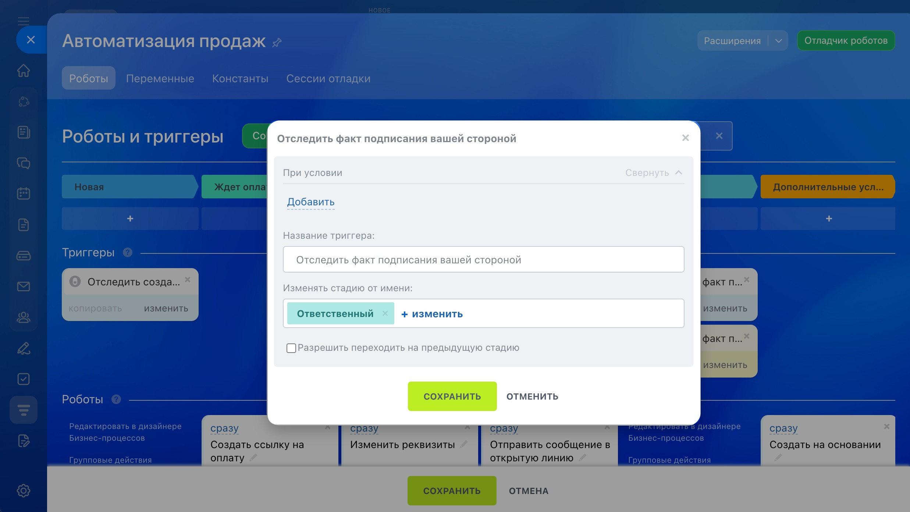
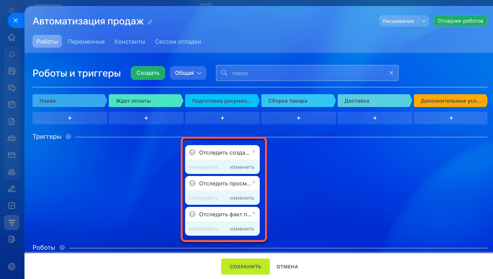
| Типовое событие | Что делает триггер | На что обратить внимание |
|---|---|---|
| Клиент ответил на письмо | Переводит сделку на следующую стадию | Проверьте, не срабатывает ли на нерелевантные ответы |
| Связанная задача закрыта | Перемещает CRM-элемент или другой объект процесса | Убедитесь, что связанная задача действительно обязательна |
| Изменилось выбранное поле CRM | Триггер изменения поля переводит элемент на настроенную стадию | Выберите поле и условие; загрузка произвольного вложения не равнозначна подтверждению готовности документа |
Если триггер переводит элемент неправильно, проверьте событие, условие, возможность возврата на предыдущую стадию и наличие другого триггера, который тоже реагирует на похожее действие.
4. Бизнес-процессы
Бизнес-процесс нужен там, где мало одного робота или триггера: есть несколько согласующих, возвраты на доработку, ветки решения и необходимость фиксировать протокол прохождения. Для M9 важно уметь отличать последовательный процесс от процесса со статусами.
Последовательный процесс
Подходит для маршрута от начала к завершению; внутри возможны условия, циклы и параллельные действия.
Процесс со статусами
Подходит, когда процесс удобнее описывать состояниями, событиями и переходами между ними. Само наличие параллельных шагов не требует процесса со статусами.
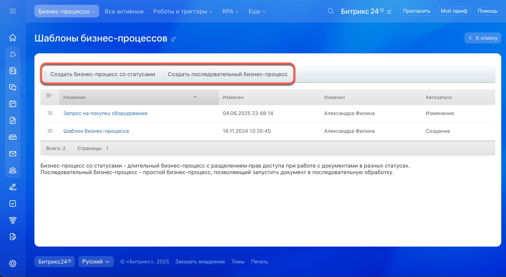
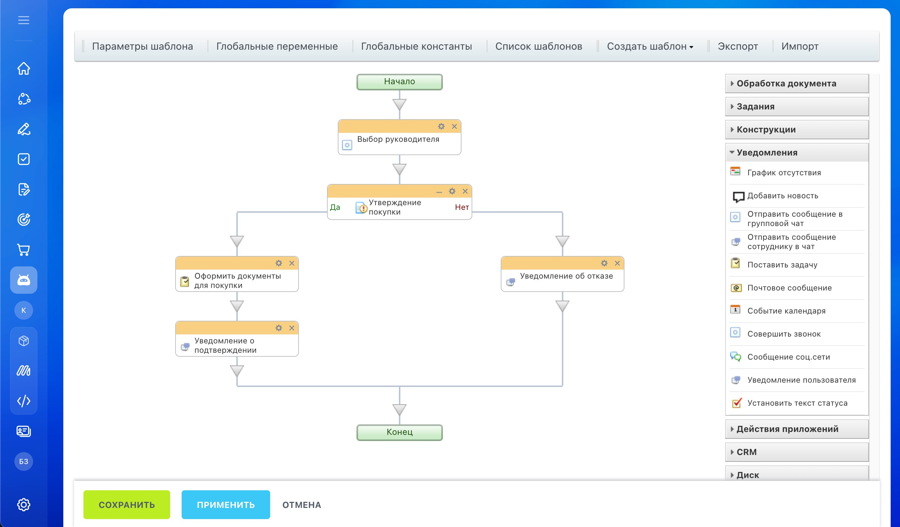
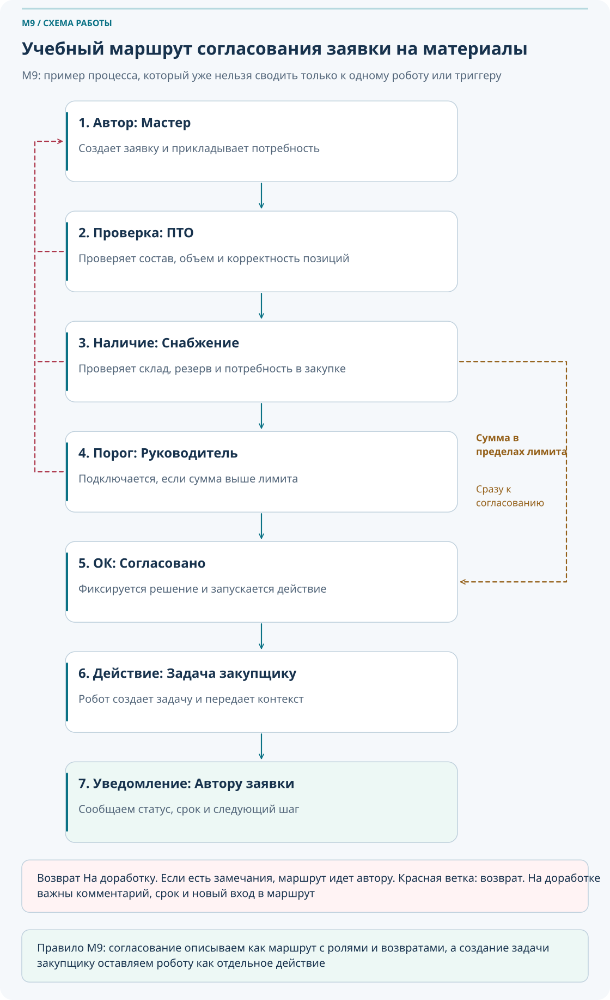
Роли, стадии, ветки согласования, условия возврата, итоговый результат, уведомления и способ фиксации протокола процесса.
5. Смарт-процессы и автоматизированные решения
Иногда задачи, CRM или Диск уже не подходят как основная сущность процесса. Тогда нужен отдельный смарт-процесс или automated solution: например, для заявки, изменения РД, рекламации или внутреннего согласования с собственным набором стадий и полей.
Когда стоит думать о смарт-процессе
Когда процесс не укладывается в сделку или задачу и требует собственной сущности со стадиями и полями.
Что оставить на базовый уровень
Понимание, что смарт-процесс — отдельная сущность, а не обязательный первый шаг автоматизации.
Что вынести в продвинутый блок
Детальную настройку сущности, формы, полей и расширенную архитектуру решения.
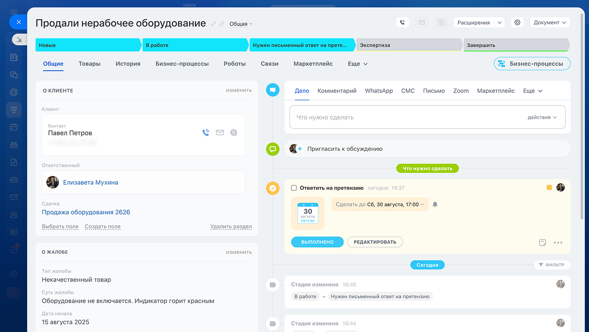
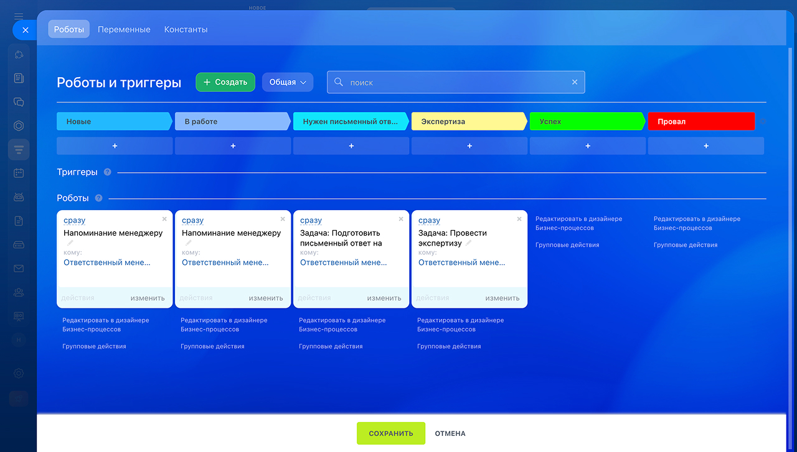
6. Тестирование и сопровождение автоматизации
Хорошая автоматизация проверяется до запуска и пересматривается после запуска. Нельзя настраивать сценарий сразу в боевой базе и считать, что на этом работа закончена.
Учебный контур
Сначала тестируйте на учебной задаче, сделке или отдельном сценарии, а не на живом объекте.
Проверка условий
Убедитесь, что триггер или робот запускается только при нужном событии.
Проверка получателей
Посмотрите, не уходит ли задача или уведомление лишним людям.
Проверка повторных запусков
Проверьте, не создает ли сценарий дубли при повторном входе в стадию или изменении поля.
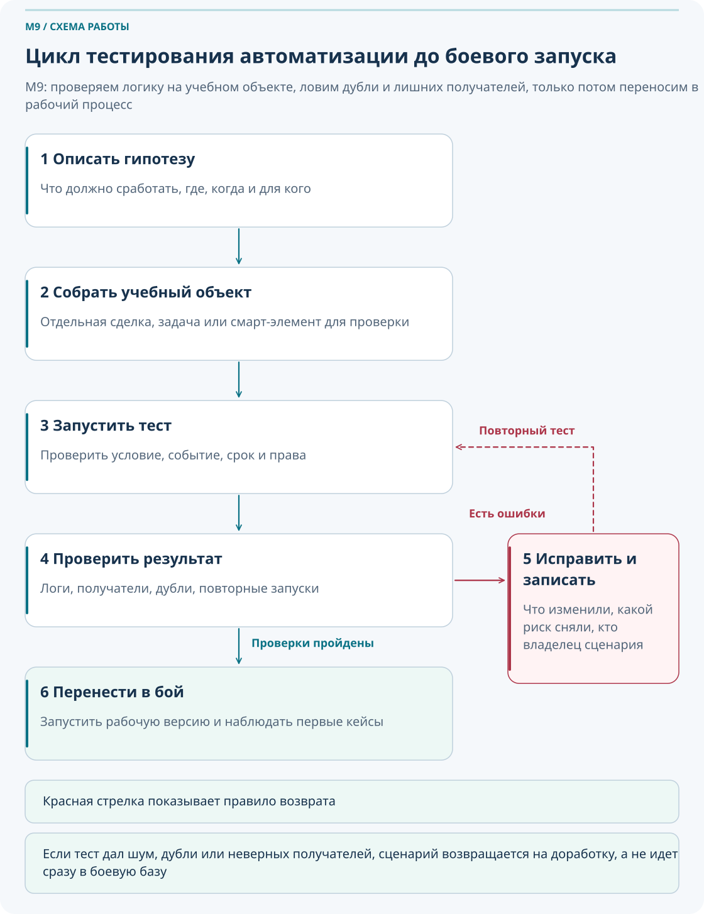
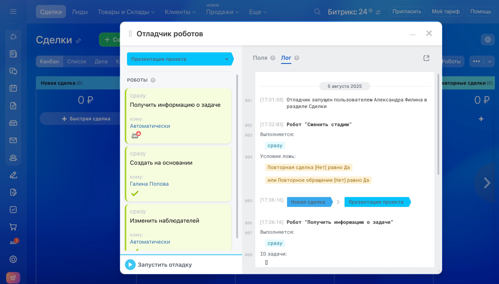
Практика «Что выбрать: робот, триггер или бизнес-процесс?»
- Нужно напомнить ПТО за 3 дня до контрольной даты.
- После проверки документов сотрудник меняет выбранное поле CRM; нужно перевести сделку в стадию «Документы получены». Проверьте наличие соответствующего триггера и его условия.
- Нужно согласовать заявку на материалы через несколько ролей с возвратом на доработку.
- Нужно создать задачу закупщику, когда заявка согласована.
Задание: для каждого кейса выберите инструмент и коротко объясните, почему именно он подходит лучше остальных.
Практика «Описание процесса до автоматизации»
Практика «Тестирование робота»
- Создайте учебную сделку или задачу.
- Настройте робота уведомления.
- Задайте условие и получателя.
- Запустите тест.
- Проверьте, пришло ли уведомление.
- Проверьте, не ушло ли оно лишним людям.
- Исправьте настройки и зафиксируйте результат теста.
Практика «Бизнес-процесс заявки на материалы»
- Автор заявки — мастер.
- Проверка состава — ПТО.
- Проверка наличия или закупки — снабжение.
- Если сумма выше порога — руководитель.
- Если есть замечания — возврат автору.
- Если согласовано — задача закупщику.
- Автор получает уведомление о результате.
- Все действия фиксируются в протоколе.
7. Сквозная практика: «От ручного контроля заявки до автоматизированного процесса»
Этот маршрут связывает весь M9 в одну рабочую логику и показывает полный цикл от проблемы до контролируемой автоматизации.
Находим проблему
Есть повторяющаяся ручная операция: заявки теряются, согласования зависают, сроки срываются.
Описываем процесс
Фиксируем роли, стадии, условия, точки возврата и результат.
Выбираем инструмент
Определяем, где нужен робот, где триггер, а где бизнес-процесс.
Настраиваем сценарий
Создаем правила, условия, задержки, уведомления и получателей.
Тестируем
Проверяем работу на учебном контуре, ловим ложные срабатывания и лишние уведомления.
Запускаем
Переносим рабочую версию в боевой процесс с понятной инструкцией.
Контролируем
Смотрим, работает ли сценарий и нет ли зависаний, дублей и непонятных задач.
Улучшаем
Обновляем схему, владельца, инструкцию и настройки по результатам использования.
8. Что делать, если…
Если робот не сработал
Проверьте стадию, условие, время запуска, права, ответственного и статус элемента. Часто причина в одной пропущенной настройке.
Если робот сработал не тем людям
Проверьте получателей, роли, переменные, ответственного и участников процесса. Не исключено, что процесс опирается на старую роль или неверное поле.
Если триггер перевел элемент неправильно
Проверьте событие, условие, разрешен ли возврат на предыдущую стадию и нет ли ложного срабатывания из-за похожего действия.
Если автоматизация создает слишком много задач
Проверьте условия, задержки, повторный запуск и наличие дублирующих роботов на соседних стадиях.
Если бизнес-процесс завис
Проверьте текущий шаг, исполнителя, протокол, уведомления и ветку возврата. Зависание часто связано с отсутствием действия одного из согласующих.
Если сотрудники не понимают, почему появилась задача
Добавьте понятный текст задачи, ссылку на объект, контекст и статью базы знаний, где объяснен сценарий автоматизации.
Если процесс поменялся
Обновите схему процесса, владельца, настройки автоматизации и инструкцию в базе знаний. Не оставляйте старую логику работать «по привычке».
Если автоматизация мешает работе
Приостановите или отключите сценарий, проведите разбор и запускайте исправленную версию только после теста.
9. Типичные ошибки автоматизации
Настраивать роботов без описанного процесса и ролей.
Смешивать роли триггера, робота и бизнес-процесса в одном непонятном сценарии.
Не тестировать автоматизацию на учебном контуре.
Создавать дублирующие уведомления и задачи на соседних стадиях.
Не назначать владельца процесса и не обновлять инструкцию в базе знаний.
Считать автоматизацию завершенной после первого запуска и не пересматривать ее дальше.
10. Самопроверка
Вопросы ниже проверяют, понимаете ли вы не только термины, но и рабочую логику M9.
Вопросы
- Чем робот отличается от триггера?
- Что делает робот на стадии?
- Что делает триггер?
- Когда нужен бизнес-процесс?
- Почему нельзя автоматизировать хаос?
- Что нужно описать до настройки автоматизации?
- Что проверить, если робот не сработал?
- Когда нужен процесс со статусами?
- Зачем тестировать автоматизацию на учебном контуре?
- Кто должен быть владельцем автоматизированного процесса?
Проверить свои ответы
- Робот выполняет действие, триггер реагирует на событие и переводит элемент на стадию.
- Создает задачу, отправляет уведомление, меняет ответственного или выполняет другое заданное действие.
- Отслеживает событие и переводит элемент в нужное состояние процесса.
- Когда есть несколько согласующих, ветки, возвраты и необходимость фиксировать протокол прохождения.
- Потому что автоматизация усилит ошибки, если роли, стадии и условия не определены.
- Роли, стадии, условия запуска, результат, владельца и способ проверки.
- Стадию, условие, время запуска, права, ответственного и статус элемента.
- Когда процесс удобнее описать состояниями и переходами по событиям. Ветвления и параллельные действия возможны и в последовательном процессе.
- Чтобы поймать ложные срабатывания, лишних получателей и дубли до боевого запуска.
- Человек, который понимает цель сценария, контролирует его пользу и обновляет процесс при изменениях.
11. Итоговое практическое задание
Сценарий: в компании заявки на материалы по объектам сейчас приходят в чатах и Excel. Часть заявок теряется, сроки поставки срываются, руководитель не видит статус.
- Опишите текущий ручной процесс.
- Определите проблему и повторяющиеся действия.
- Назначьте роли: мастер, ПТО, снабжение, руководитель, закупщик.
- Определите стадии заявки.
- Выберите инструменты: где нужен робот, где триггер, где бизнес-процесс.
- Спроектируйте маршрут согласования.
- Опишите условия возврата на доработку.
- Опишите, какие задачи и уведомления создаются автоматически.
- Составьте план тестирования.
- Опишите, как будет оцениваться эффект через 1 месяц.
- Подготовьте краткую инструкцию для базы знаний.
Критерии успешного прохождения
- Сотрудник понимает разницу между роботом, триггером и бизнес-процессом.
- Сотрудник умеет выбрать инструмент под конкретный сценарий.
- Сотрудник понимает, что автоматизация должна опираться на описанный процесс.
- Сотрудник умеет описать роли, стадии и условия.
- Сотрудник умеет настроить или описать простого робота.
- Сотрудник понимает принцип работы триггера.
- Сотрудник умеет спроектировать простой маршрут согласования.
- Сотрудник понимает необходимость тестирования и знает типичные ошибки автоматизации.
- Сотрудник умеет предложить метрики оценки эффекта.
12. Что дальше в курсе
13. Полезные материалы
- Роботы и триггеры в Битрикс24
- Как использовать роботов и триггеры в задачах
- Роботы в CRM
- Триггеры в CRM
- Роботы и триггеры CRM: управление задачами
- Как выбрать тип бизнес-процесса
- Как создать шаблон последовательного бизнес-процесса
- Бизнес-процессы на Диске
- Как работать в дизайнере бизнес-процессов
- Как настроить смарт-процесс в CRM
- RPA: как автоматизировать рутинные задачи
- Отладчик роботов: проверка автоматизации